文档 2.2 · 首页设计规范
本页为 V2.2 只读历史正文；评论不会连接当前评论 API。打开只读评论归档（21 条）
首页视觉与交互设计规范
首页是一张交易工作台：先看这一段时间的表现，再检查当前持仓，理解盈亏来自哪里，最后进入历史核对与复盘。本规范从这条使用路径出发，说明页面为什么这样安排，以及每个模块应如何显示和响应操作。
文档包含整页设计、模块规则、可切换的交互分镜和可复用控件。设计人员可以按章节阅读，开发人员可以查阅尺寸与状态，验收人员可以用最后的检查表逐项对照。图中的交易数据用于说明设计。
一、设计目标与取舍
首页首先回答什么
用户打开首页时，最需要知道的是“最近表现如何”“现在持有什么”“结果由哪些交易或标的形成”。因此，页面把当前表现、当前持仓、当前期间贡献放在连续的阅读路径上，历史已平仓结果位于其后。日期检索和待复盘入口把阅读结果自然接到交易库中的后续工作。
首页只呈现实盘。模拟交易属于子模块能力，不混入首页的选择器、统计或数据。这样，同一屏上的数字始终有明确、稳定的业务范围。
为什么采用这套层级
| 设计选择 | 解决的问题 | 取舍 |
|---|---|---|
| 当前表现放在最前 | 首先回答当前期间是否盈利、变化从何而来 | 持仓列表略向下，但紧随曲线，仍是第二个核心模块 |
| 期间、最新持仓、历史结果分区 | 避免不同时间口径被误读成一个总数 | 保留三个明确的时间概念，不能为压缩界面把它们合并 |
| 一个主曲线，组成项放入详情 | 让趋势可快速辨认，减少多线竞争 | 具体原因需要悬停或聚焦后查看，详情字段必须完整 |
| 公共范围放页头，局部操作留在模块内 | 让用户知道一次操作会影响哪里 | 同为搜索也要区分“找标的”和“筛持仓”，不共用模糊入口 |
| 固定高度的八行列表 | 翻页和数据量变化时，下方模块保持稳定 | 少量数据保留空行槽，大量数据通过分页查看 |
| 异常时提示，正常时保持安静 | 避免状态徽章和操作按钮抢占核心数字 | 缺失原因仍需可查，恢复动作集中到一个入口 |
视觉上的科技感来自清晰的数字层级、精确对齐、克制的深色表面和明确的操作反馈。首页不使用口号、重复背景卡片或常驻资产分布侧栏；口径说明放在标题旁的可访问说明入口，给数据留下空间。
贯穿所有模块的原则
先解释数字，再突出数字。 金额要同时说明币种、时间范围和数据覆盖情况。未知显示缺失原因，不能写成零。最新持仓市值不包含现金和负债，不能命名为“总资产”。
操作范围可预测。 市场和账户作用于整页；期间只作用于期间统计；持仓搜索只作用于当前表格。任何范围变化都应让标签和数据一起更新。
位置稳定，状态可恢复。 浮层覆盖内容，分页替换行，加载保留占位；打开、关闭或等待数据都不推动主要布局。进入详情再返回，应找得到之前的行和位置。
只展示必要动作。 详情保留一个“查看交易”主动作；数据异常只保留一个全局“一键修复”入口。按钮名称说明实际结果，而不是要求用户猜测。
二、整页布局与视觉基础
阅读顺序与空间
页面从上到下依次是：页头范围工具、当前表现、当前持仓、当前期间贡献、历史已平仓。当前表现由四张指标卡和一张曲线组成。期间贡献与当前表现使用同一期间，虽然位于持仓之后，也不属于历史模块。
V2.2 旁注：当前期间贡献位于历史已平仓之前；整体仍以当前表现开篇。


| 布局部位 | 尺寸与规则 |
|---|---|
| 左侧导航 | 宽72px |
| 页头 | 高64px，所有控件垂直居中 |
| 内容区域 | 左右各24px；1440与1280宽度下，主内容约1320与1160px |
| 模块间距 | 24px；模块内部主要间距16px |
| 表面层级 | 单层模块表面；浮层使用更高一级背景，不套重复卡片 |
| 适用画面 | 桌面1440×1000、1280×800，100%缩放 |
分镜为了清楚展示局部，可能放大控件。实现时以本规范的尺寸表为准，不能从放大示意图直接量取控件大小。
颜色、文字与对齐
深色背景承载整页，表面和边线划分区域；蓝色表示可操作或当前选择，绿色和红色表示盈亏，黄色提示数据需要关注。颜色必须配合文字或可访问名称，不能单靠颜色表达状态。
| 用途 | 颜色 |
|---|---|
| 页面背景 / 模块表面 / 浮层表面 | #0B1019 / #111A26 / #162233 |
| 边线 | #283448 |
| 正文 / 次要文字 / 弱提示 | #E6EDF7 / #A8B6CB / #71829B |
| 操作 / 焦点 | #6CA8FF / #A9C8FF |
| 盈利 / 亏损 / 提醒 | #53D7A0 / #FF8592 / #FFC66D |
| 悬停 / 按下背景 | #1C2B42 / #243B5C |
| 禁用文字 / 禁用边线 | #53647B / #202B3A |
| 文字层级 | 字号 / 行高 |
|---|---|
| 页面标题 | 24 / 32px |
| 模块标题 | 18 / 24px |
| 正文、金额、控件文字 | 14 / 20px |
| 说明、代码、坐标轴 | 12 / 16px |
| 指标主值 | 28 / 34px |
字体使用系统无衬线字体，中文由平台字体补齐。相比固定下载字体，这种选择更稳定，也不会增加字体加载和授权依赖；全页等宽字体会损害中文与长名称的阅读，因此只对数字启用等宽数字特性。
间距以4px为基础，使用4、8、12、16、24、32px。小控件圆角6px，面板和浮层圆角8px；键盘焦点为2px浅蓝外描边。金额和数值表头对齐右边界，名称与说明左对齐。
三、页头范围、搜索与筛选
同一排工具，各自有明确职责
页头从左到右为页面标题、市场切换、账户选择、标的搜索、筛选、更新时间。市场固定使用“全部 / A股 / 港股 / 美股”四个标签，用户不必先展开下拉菜单才能识别当前范围。
账户选择器高36px，建议宽176px；当前账户始终可见，箭头固定靠右，长名称省略并提供全称。相邻控件间距8px，选择不同值不改变控件宽度。搜索与筛选是独立图标按钮，视觉图标18px、绘图坐标24×24、命中区域36×36px。
| 操作 | 影响范围 | 币种或结果 |
|---|---|---|
| 切换市场 | 表现、持仓、贡献、历史 | 全部和A股为CNY，港股为HKD，美股为USD |
| 切换账户 | 整页当前账户范围 | 选择器保留当前值 |
| 标的搜索 | 查找标的并打开详情 | 不改变市场、账户或期间 |
| 附加筛选 | 按已应用条件限制数据 | 条件以计数和可移除标签显示 |

找到标的，再进入详情
标的搜索采用宽360px、锚定在触发按钮附近的浮层。搜索结果同时显示名称、代码、交易所、币种和资产类别，帮助用户区分同名标的。交易所是直接可见信息，不只放在悬停提示中。
输入停顿300ms后查询；中文输入尚未完成组词时不查询，确认完整词后再提交。清除按钮只清空查询词和候选结果。浮层关闭不改变首页范围。
| 步骤 | 用户动作 | 画面与返回行为 |
|---|---|---|
| 打开 | 点击搜索图标 | 浮层覆盖内容，页头、指标与表格位置不变 |
| 输入 | 输入名称或代码 | 等待300ms后显示匹配结果；无结果明确说明 |
| 查看 | 选择一个结果 | 打开详情对话框，保留原查询和结果位置 |
| 进入交易 | 点击“查看交易” | 按所选标的进入交易库 |
| 关闭详情 | 关闭按钮或Esc | 回到原搜索结果，保留查询词、滚动和所选行 |
| 退出搜索 | 再次Esc或点击浮层外 | 回到搜索触发按钮 |
详情对话框锁定键盘焦点，外点不关闭；搜索结果浮层允许外点关闭。不同层级使用不同退出规则，避免误触丢失详情上下文。
截图状态对照 · 文档演示
按步骤读懂状态变化
截图状态对照 · 文档演示；按钮仅切换截图，不操作产品

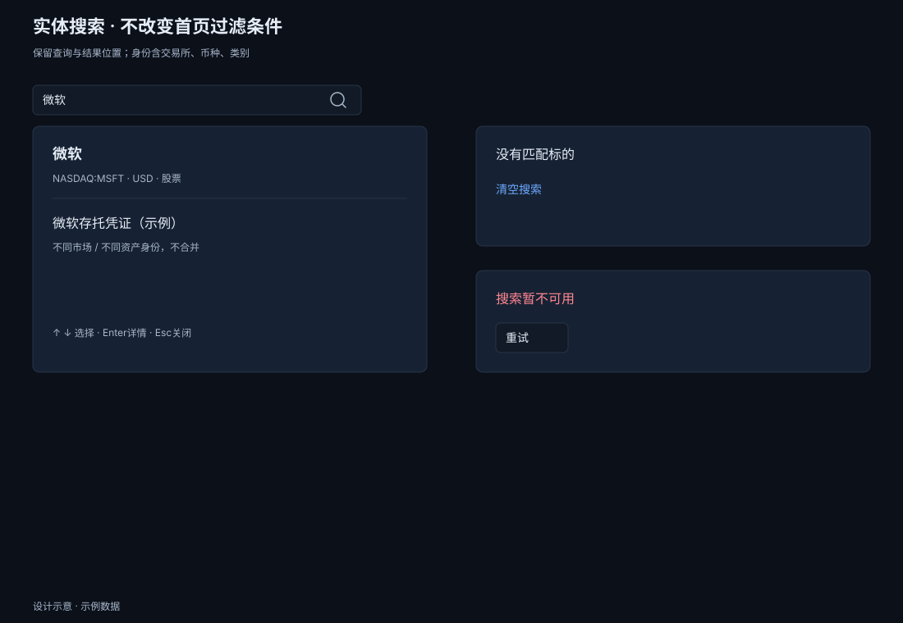

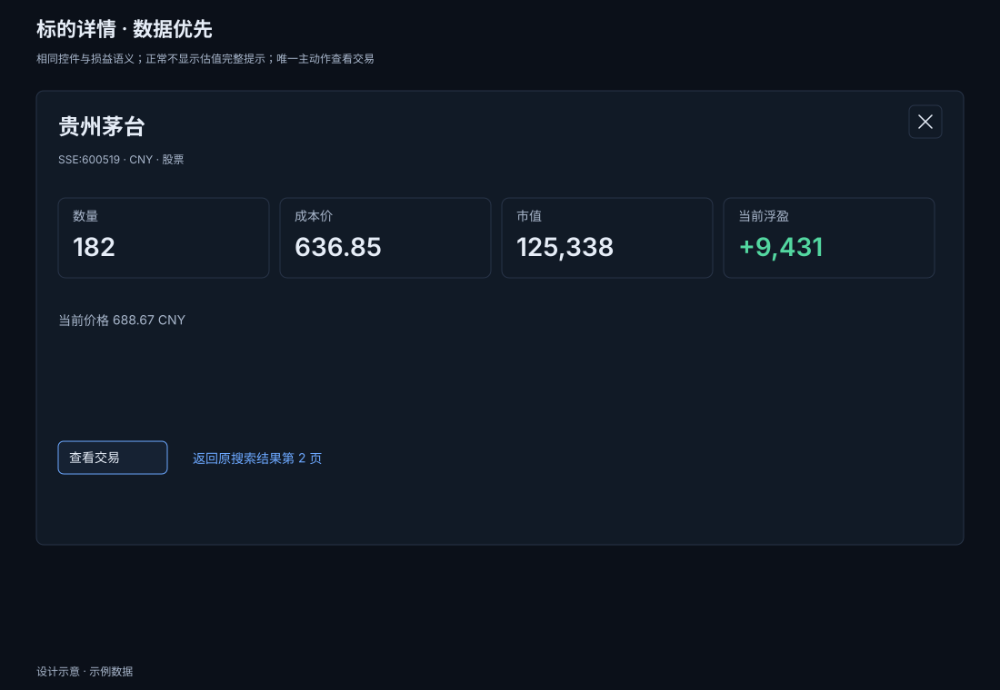

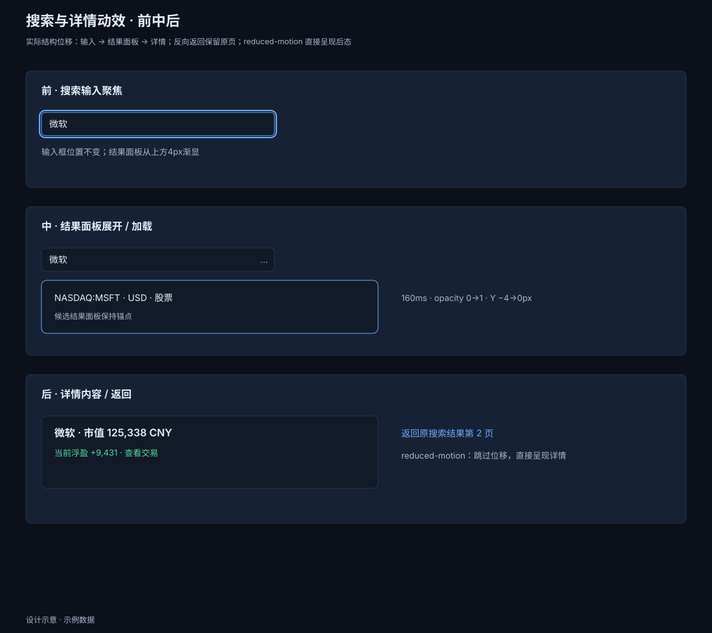
第 1 / 3 帧

筛选：编辑与生效分开
筛选一共包含市场、账户、标的类别、是否有未实现数据、是否待复盘五个维度。市场和账户在页头，宽320px的筛选浮层承载其余条件，使用直接多选，避免在浮层中继续嵌套下拉。
同一维度中任一所选项满足即可，不同维度之间必须同时满足。用户编辑的是草稿，点击“应用”后一次生效；已生效条件用数量角标和可移除标签表达。
| 动作 | 结果 |
|---|---|
| 应用 | 一次提交当前草稿，成功后更新条件和数据 |
| 清除附加 | 清除附加筛选，保留市场、账户与实盘范围；编辑仍按应用规则生效 |
| 恢复全部默认 | 恢复默认市场、账户及附加条件；不改日期期间 |
| Esc或点击外部 | 关闭浮层，保留未提交草稿；重新打开可继续编辑 |
| 切换市场或账户 | 关闭浮层并丢弃旧范围的筛选草稿 |
V2.2 旁注：恢复默认独立放在第二行，与清除附加和应用分开，底部保留16px空间。
截图状态对照 · 文档演示
按步骤读懂状态变化
截图状态对照 · 文档演示；按钮仅切换截图，不操作产品

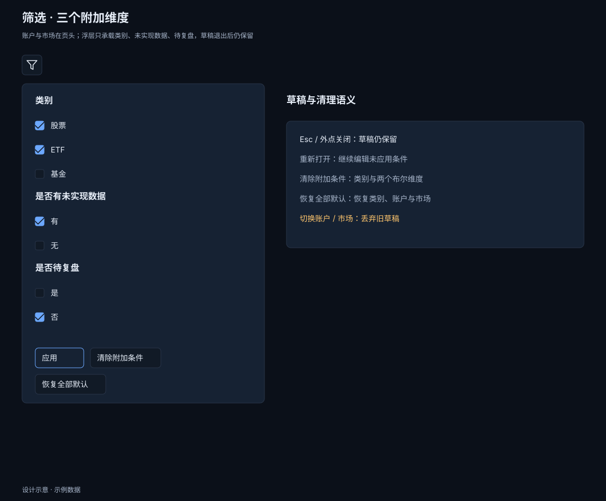

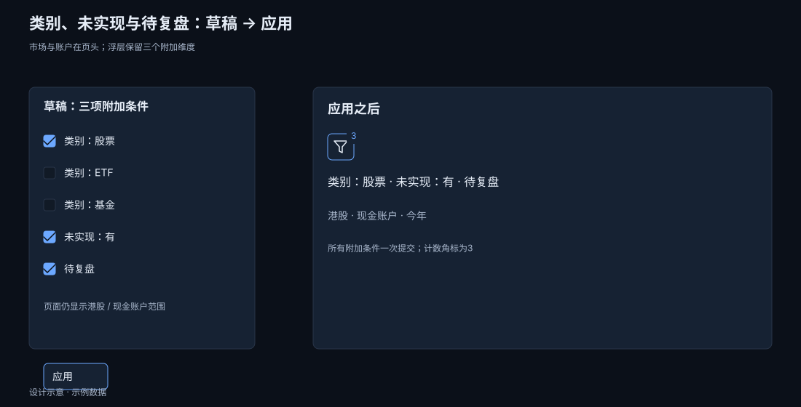

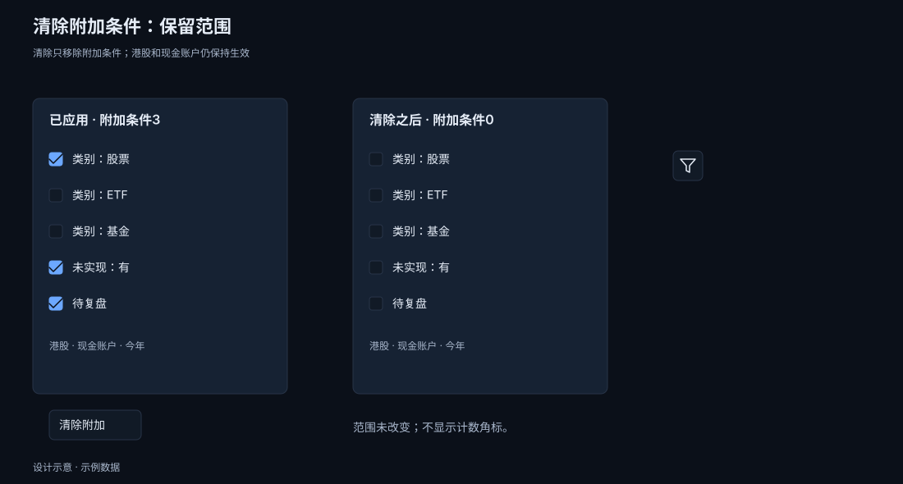

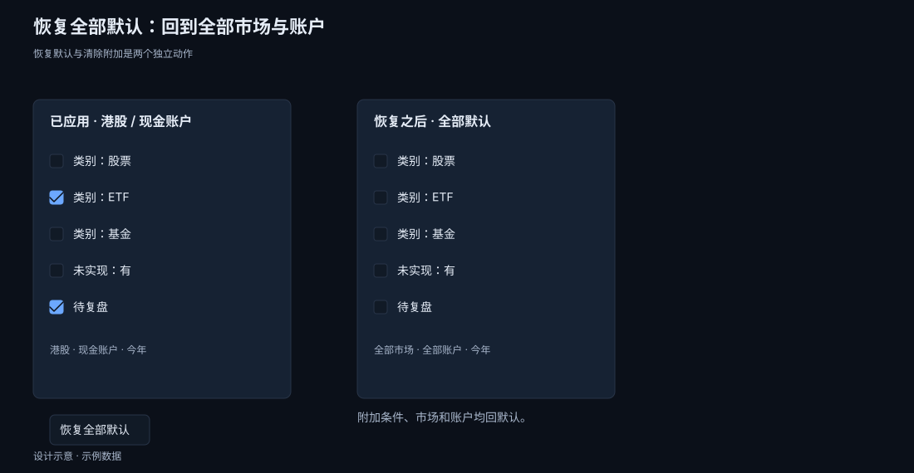

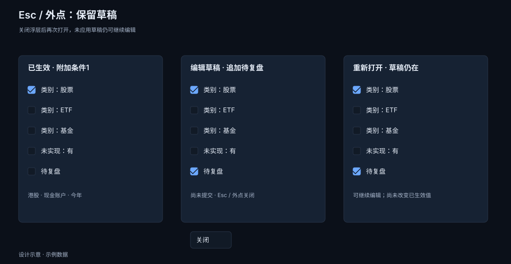
第 1 / 5 帧
四、当前表现：指标、期间与曲线
四个指标如何解释结果
当前表现帮助用户同时看清结果和构成。前三张卡回答所选期间发生了什么，第四张卡回答现在持有多少市值。
| 指标 | 含义 | 随期间变化 |
|---|---|---|
| 期间净盈亏 | 期间已实现，加上期末与期初浮盈的差额 | 是 |
| 期间已实现 | 按实际平仓日归属、扣除费用的已实现结果 | 是 |
| 期间浮盈变动 | 期末浮盈减期初浮盈 | 是 |
| 当前持仓市值 | 最新可用行情下的持仓市值 | 否 |
计算关系为：期间净盈亏 = 期间已实现 + 期末浮盈 − 期初浮盈。部分平仓逐笔按平仓日期和金额计算，做空也使用实际平仓时间和金额。期间浮盈变动不能替换成当前浮盈总额。
四张卡同时存在，高88px；标签14/20px，主值28/34px。正值绿色、负值红色、零值正文色。当前市值的详情还需显示当前浮盈、覆盖数量、原币金额与汇率来源。
例如，上年成本100，今年期初市值120、浮盈20，今年以130卖出：今年期间已实现为30，期末浮盈为0，期间净盈亏为30＋0−20＝10；历史已平仓按今年平仓日记录30。两个数字回答不同问题，不能相加。这个例子说明计算口径，不改变未平仓贡献的展示范围。
期间选择与更新时间
快捷标签为“今年 / 近1月 / 近1周”，同时显示实际起止日期。当前定义分别是自然年、自然月、自然周至今天；自然周从周一开始。所有日期按上海时区划分，结束日包含当天23:59:59，跨午夜成交先转换到同一业务时区。
自定义日期在应用后生效。取消、Esc或校验失败都保留之前的期间。日期变化同时更新前三项指标、曲线和期间贡献，不改变最新持仓或历史年度结果。

更新时保留上一组完整数据；成功后范围标签和数字一起替换，失败则保留原范围并说明新选择未应用。不能出现新日期配旧金额。
曲线应让用户注意到什么
主曲线表达“当前表现｜期间净盈亏（按日）”，重点是趋势、转折和相对于零线的位置。仅绘制一条主线，组成项进入日期详情，避免多条曲线同时争夺注意力。
线宽2px，坐标文字12/16px，纵轴最多7个刻度，金额使用完整千分位和市场币种。零线使用#A8B6CB，网格使用#283448，两者帮助读数；双向虚线十字线和轴端日期、金额标签帮助定位。提示框靠近边缘时自动避让，不能遮住主要曲线。
V2.2 旁注：图表增加网格、双向十字线、轴端标签和缺口说明。
| 日期详情字段 | 要求 |
|---|---|
| 日期 | 使用所选图点的业务日期 |
| 当日持仓市值、当日浮盈 | 使用该日实际数据，不能回填最新值 |
| 累计已实现、累计净盈亏 | 截止所选日的累计结果 |
| 费用、汇率、行情覆盖 | 显示状态与缺失原因；金额可查看完整精度和原币 |
鼠标悬停300ms后显示提示，移开100ms后关闭；键盘聚焦立即显示。左右键选择相邻有效点，Home/End跳到首尾，Enter固定详情，Esc关闭并返回触发点。Esc关闭后，重新进入该点才再次显示。
缺行情或汇率时曲线断开，不插值，也不制造虚拟点；提示写清日期范围、缺失原因，未知金额显示“—”。日期详情不提供“查看该日敞口”二级入口。
截图状态对照 · 文档演示
按步骤读懂状态变化
截图状态对照 · 文档演示；按钮仅切换截图，不操作产品

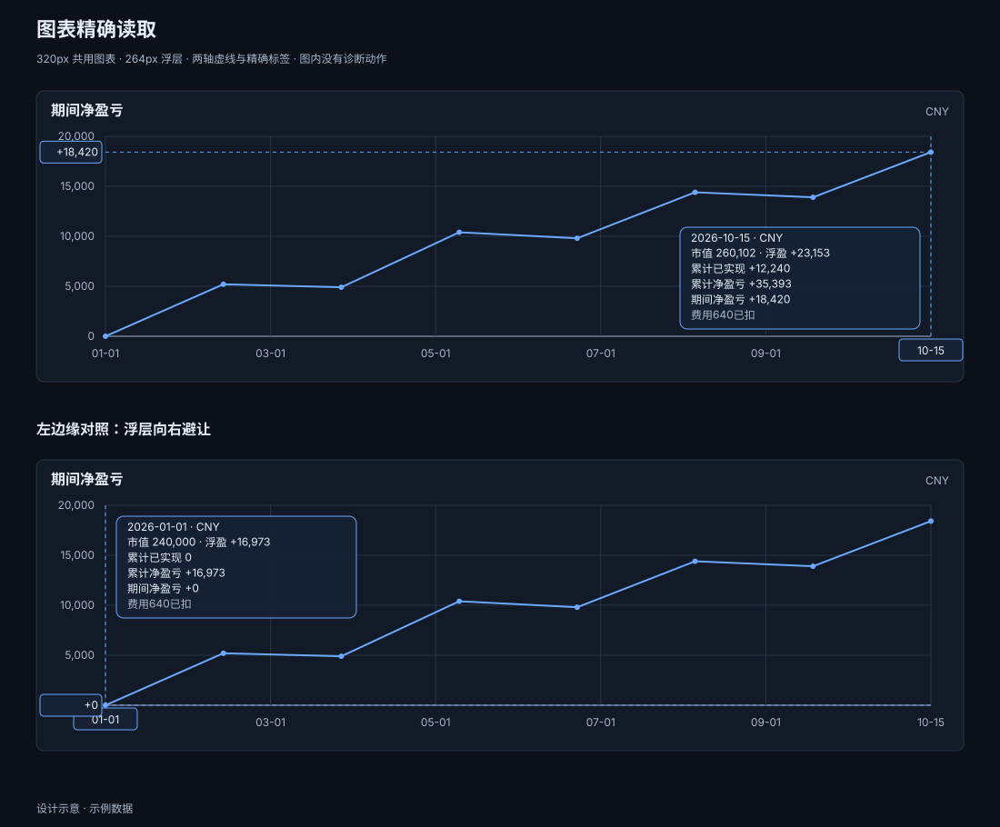

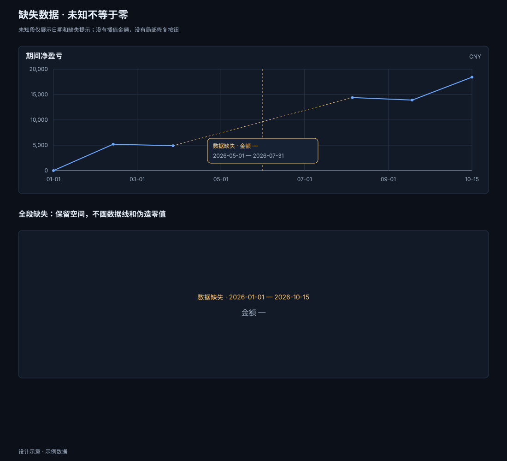

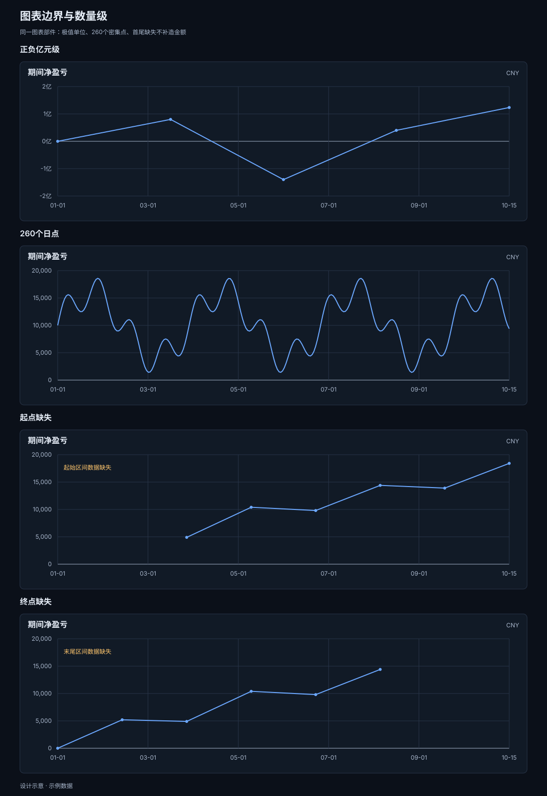

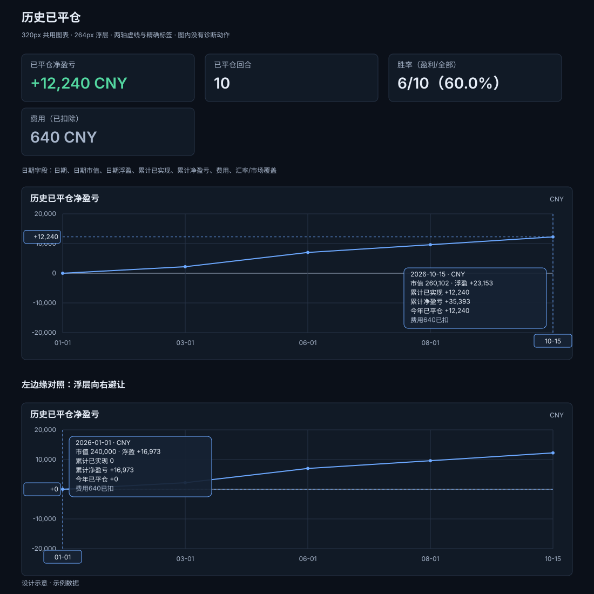
第 1 / 4 帧
五、当前持仓：稳定扫描与逐行查看
列表的阅读重点
持仓表首先帮助用户辨认标的，再比较持有时间、数量、成本、最新价、市值和浮盈。模块标题明确写“当前持仓（最新）”，与上方期间统计区分。名称和交易所代码组成身份区域，数值沿固定右边界排列。
标题区高48px、表头40px、每行48px、分页区48px，固定八行槽。即使只有五条数据，分页区和下方模块也不向上跳动。
| 列 | 内宽比例 | 展示与对齐 |
|---|---|---|
| 标的 | 25% | 左对齐；名称最多两行，代码与交易所可辨认 |
| 持仓天数 | 8% | 右对齐；当天为“0天”，未知为“—” |
| 数量 | 10% | 右对齐；保留真实精度与负号，不用科学计数法 |
| 成本价 | 11% | 右对齐；两位小数 |
| 最新价 | 11% | 右对齐；两位小数 |
| 持仓市值 | 15% | 右对齐；列头带市场币种 |
| 当前浮盈 | 14% | 右对齐；正负号与颜色共同表达结果 |
| 查看 | 6% | 独立详情图标，36px命中区 |
列宽按面板内宽减去左右各16px后计算，舍入差额归标的列。数值列的完整标题和数据共用同一右边界；不同位数、正负号和千分位不得造成对齐漂移。1440与1280画面仅调整列宽，不改变行高和槽数。
V2.2 旁注：成本价、最新价统一显示两位小数，并明确数值表头与内容的共同右边界。显示精度不改变原始交易精度。

搜索、排序、导出与分页
局部搜索浮层宽280px，只过滤持仓表；输入防抖300ms，中文组词期间不查询。输入新词、清空搜索、排序或切换市场都回第1页，清空局部搜索不重置全局范围。打开和关闭搜索不改变表格高度。
排序入口为列头按钮或菜单，显示箭头、可访问名称和说明。全部市场完成CNY换算后，市值与浮盈可以排序；汇率不完整或覆盖不足时禁用，并说明原因。导出针对完整筛选结果，而不只导出当前页；没有数据时禁用，提示“无可导出的持仓（0）”。


详情与返回
查看按钮的提示和可访问名称为“查看持仓详情”。关闭详情后，恢复来源行、搜索词、排序、页码和滚动位置；来源行若因刷新消失，焦点回表格标题。这个返回目标与标的搜索进入详情时的结果列表不同。
键盘依次经过局部搜索、表头排序、逐行查看和分页。名称被省略时，悬停或聚焦可读到全名、代码、交易所和资产类别。

空数据、长名称与极值
| 情况 | 画面与操作 |
|---|---|
| 没有持仓 | 保留空表结构与下一步说明，不显示“第1/1页” |
| 有持仓但搜索无匹配 | 显示不同的无匹配文案，提供清除搜索入口 |
| 缺少成本 / 最新价 | 分别显示“暂无” / “待更新”，不能写成零 |
| 长名称 | 保留身份识别，省略部分在悬停或聚焦时完整展示 |
| 超长数值 | 可使用第二行12/16px说明或提示框，不撑高48px行 |
| 最后一页不足八项 | 保留八个行槽和稳定分页位置 |


六、当前期间贡献与历史结果
期间贡献：解释结果来自哪里
期间贡献紧接持仓表，帮助用户从“持有什么”继续理解“哪些标的形成了当前期间的结果”。它与期间净盈亏使用相同日期、市场、账户、费用和汇率口径；适用范围内，证券或市场的全量贡献合计应与期间净盈亏一致。
维度可切换为“证券 / 市场”；“盈利最高”按值降序，“亏损最大”按值升序。进入市场下钻后显示返回面包屑，保留全量期间合计，避免局部结果被误认为整个账户的结果。
正负贡献分别从零线两侧绘制。实心表示已平仓期间贡献，中空表示未平仓期间贡献；两者可能异号，不能把负值也堆成正宽度。未平仓贡献当前仅显示当年，自定义跨年范围的展示方式见附录中的待决策项。
每页固定八行；五十项共七页，最后一页两项。翻页不推动历史模块，键盘焦点进入新页首行。合计始终来自全量数据，而不是当前页。
V2.2 旁注：期间贡献采用固定八行分页。


历史已平仓：按完成年度核对
历史模块只包含已平仓交易，按平仓日归年，呈现净盈亏、费用、回合数、胜率及完整历史贡献。胜率同时显示分子与分母，例如4/7（57.1%）；没有已平仓回合时显示“暂无已平仓回合”，不显示0%。
切换历史年份不改变当前期间和最新持仓。历史成交补录、撤销或修正后，相关年份可以重新计算，并显示带业务时区的更新时间。历史结果与期间贡献有不同口径，分开命名、分开核对，不能相加。

七、从首页进入交易与复盘
从数字走向具体交易
日期检索把趋势上的日期接到具体交易；待复盘入口把交易结果接到复盘任务。进入交易库后，来源日期、市场和账户条件已经生效，不要求用户再次应用。条件摘要是只读说明，应与按钮分开，不画成待确认的操作。
| 旅程 | 进入后的状态 | 返回与刷新 |
|---|---|---|
| 按日期查看交易 | 显示该日和来源市场、账户，日期结果按平仓日排序 | 刷新保留条件；回首页恢复原期间及位置 |
| 进入待复盘 | 显示来源范围内的待复盘交易 | 数量与首页范围一致；完成后可核对队列变化 |
| 打开交易详情 | 携带正确交易或回合 | 关闭后回到来源列表上下文 |
| 返回首页 | 重新读取首页数据 | 恢复范围、筛选、持仓与贡献页码、排序和滚动 |
待复盘数量为0时隐藏数字，仍保留可访问名称；超过99显示“99+”。日期或筛选参数不合法时使用明确的默认值并提示，而不是静默展示一个不同范围。

搜索与刷新各占独立位置
交易表的搜索和刷新放在标题工具区，不侵占表头或数据行。搜索框宽220px，刷新按钮36px，两者间隔28px；条件摘要在独立区域展示。空结果时图标和说明纵向分离，避免文字被覆盖。
V2.2 旁注：交易搜索、刷新按钮与表格内容分区摆放。


八、异常状态与动效
等待、缺失和失败分别表达
正常状态保持简洁，不展示“估值完整”等常驻徽章。异常才出现简短原因，颜色辅助识别：加载为灰蓝，更新为蓝，数据过期为黄，失败为红。所有状态都提供文字或可访问名称。
| 状态 | 画面 | 用户可以做什么 |
|---|---|---|
| 首次加载 | 标题、四指标、图表、表头和八行槽按最终尺寸占位 | 等待数据，不被布局跳动打断 |
| 已有数据、后台更新 | 保留上一组完整有效数据 | 继续阅读，辨认更新状态 |
| 没有数据 | 区分空持仓、搜索无匹配、零贡献、零待复盘 | 按照对应空态继续操作 |
| 缺行情或汇率 | 未知金额用“—”，曲线缺口断开 | 查看原因，使用全局修复 |
| 首次加载失败 | 明确不可用，不伪造零值 | 使用全局恢复入口 |
| 更新失败或超时 | 保留旧范围和有效值，说明新范围未应用 | 通过同一全局入口重试 |
| 部分修复成功 | 更新已完成部分，仍显示剩余缺失 | 了解未完成原因，再次使用同一入口 |
首页只有一个全局“一键修复”。修复中禁止重复提交；成功后相关数据一起刷新，失败后恢复同一按钮。图点和局部模块只说明原因，不增加第二个补全、日志或修复入口。
截图状态对照 · 文档演示
按步骤读懂状态变化
截图状态对照 · 文档演示；按钮仅切换截图，不操作产品

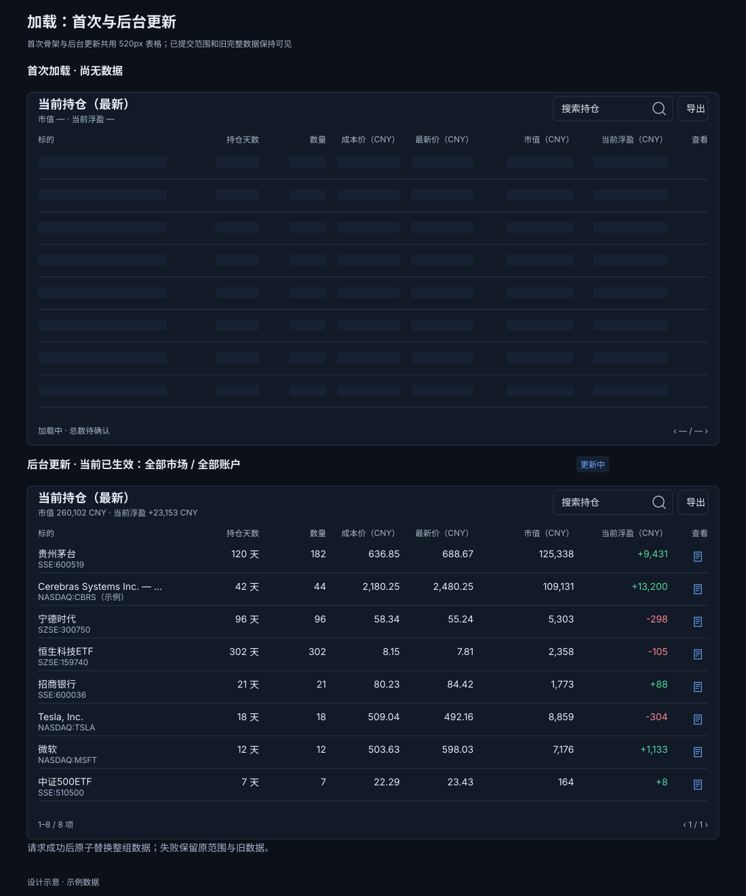

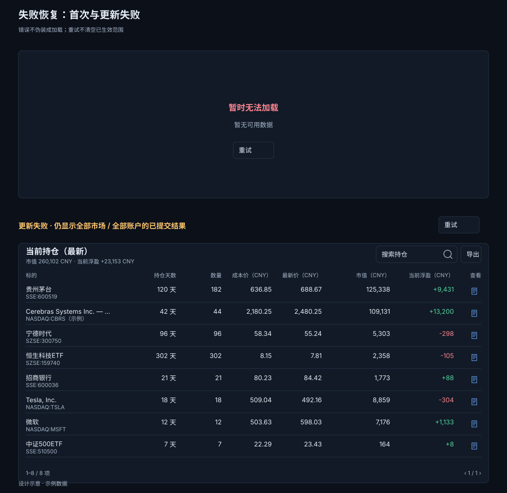

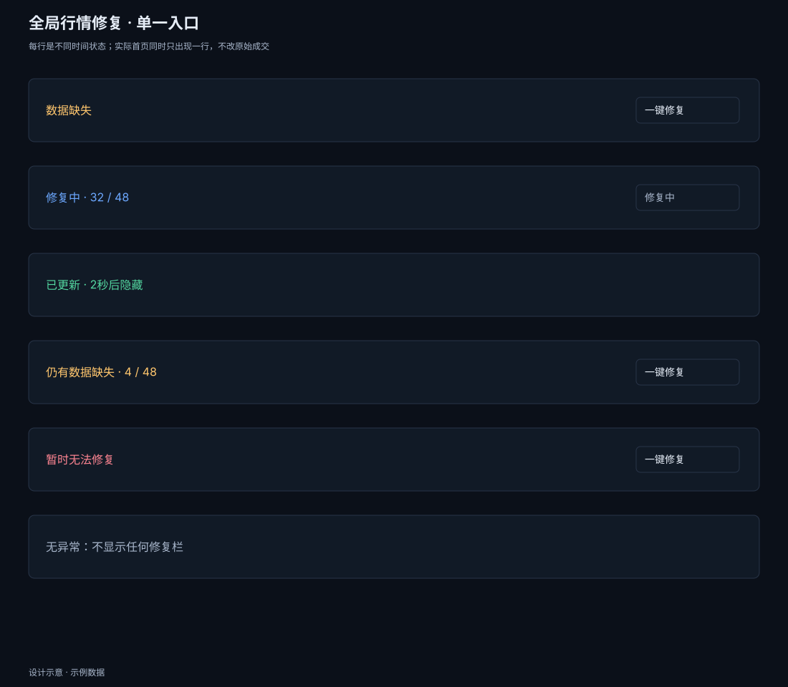
第 1 / 4 帧
快速连续操作也不能串数据
用户连续切换范围时，只应用最后一次仍然有效的选择。等待期间，标题、币种和数据继续对应原范围；较早的请求即使晚到，也不能覆盖新选择。新请求失败时保留原范围，并说明新选择没有应用。
例如，用户正查看全部市场，先选港股、随即又选美股：选择器显示等待反馈，标题、币种、指标、曲线、贡献和表格仍共同指向全部市场。港股请求被取消，迟到结果不显示；只有美股读取成功后整组切换。若失败，则明确提示“美股未应用”，继续保留全部市场的数据。
日期切换只同步替换期间指标、曲线和贡献，当前持仓始终保持最新时点。请求超过15秒转为手动恢复，不无限自动重试。开发所需的请求识别方式放在附录中。
动效用于解释变化
| 变化 | 动效 | 不应发生的结果 |
|---|---|---|
| 浮层打开 / 关闭 | 160ms缓出，透明度变化并移动4px | 不能推动触发器、标题或表格底边 |
| 鼠标悬停 | 120ms颜色变化 | 不能改变控件大小 |
| 数据替换 | 150ms淡入 | 金额不滚动跳数，不出现半组新数据 |
| 翻页 | 替换行，保持容器高度 | 下方历史区不移动 |
| 键盘焦点 | 立即移动、清晰描边 | 不靠动画才能辨认当前位置 |
| 图表提示 | 显示和关闭，不缩放 | 不遮住主要曲线或超出边界 |
用户启用减弱动效时，移除位移、计数和淡入，直接显示最终状态。
九、可复用控件
统一外观，保留各自职责
子模块可以复用这些控件的尺寸、颜色、焦点和状态规则，但要明确自身的数据范围。不能因为都使用同一种按钮，就把搜索、筛选、修复或详情混成一个操作。
| 控件 | 用途 | 关键尺寸 |
|---|---|---|
| 图标按钮 | 单一语义动作，如搜索、筛选、查看 | 36×36px命中；通用图标16×16坐标，页头搜索/筛选使用18px视觉图标、24×24坐标 |
| 分段标签 | 少量互斥范围，如市场 | 高36px |
| 选择器 | 显示并选择当前账户 | 高36px、最小宽120px；页头建议176px |
| 浮层 | 就地搜索或编辑筛选 | 搜索宽360px、筛选宽320px、输入高36px |
| 条件标签 | 显示与移除已应用条件 | 可见高24px，外层与删除命中高36px |
| 指标卡 | 结果与口径说明 | 高88px，主值28px |
| 状态徽章 | 需要注意的状态 | 当前高24px |
| 数据表 | 稳定扫描与逐行操作 | 表头40px、行48px、分页48px |
| 图表提示 | 解释选中日期与金额 | 基础尺寸264×112px，内容完整并避让边缘 |
| 空状态 | 说明没有结果及下一步 | 最小高120px |
| 全局修复按钮 | 恢复缺失数据或失败请求 | 可见高32px、命中高36px |

每个状态都应有明确结果
默认态说明可操作边界；悬停态提供轻反馈；焦点态支持键盘定位；按下态确认触发；禁用态说明为什么不能操作；加载态保留上下文；空态区分没有数据与没有匹配；错误态说明原因和恢复位置。
控件状态手册逐一列出11类控件的八种状态，包含触发、反馈、退出、键盘和错误恢复，以及对应图稿。共88个状态组合，其中78个适用、10个因控件性质不适用；不适用的状态也明确说明，不用一张缩略图代替完整交互规则。
十、实现与验收
按用户路径检查
| 检查范围 | 必须观察到的结果 |
|---|---|
| 整页布局 | 表现、持仓、贡献、历史顺序一致；两个桌面尺寸保持相同层级 |
| 范围切换 | 市场、账户、币种和数据一致；失败不留下新标签配旧数字 |
| 期间选择 | 三项期间指标、曲线和贡献一起更新；持仓和历史不随之变更 |
| 搜索与筛选 | 输入法、清除、应用、Esc与外点符合各自规则；浮层不推动页面 |
| 持仓表 | 0、5、10、20、50条及末页保持结构；数值右对齐；长名和缺失值可理解 |
| 贡献与历史 | 全量合计不随分页变化；年份切换与零样本口径正确 |
| 查看和返回 | 恢复来源行、页码、筛选、排序与滚动；来源消失时有合理焦点 |
| 异常恢复 | 首次失败和更新失败不同；只存在一个全局修复入口 |
| 可访问操作 | 鼠标与键盘均能完成核心路径，焦点和说明清楚可见 |
视觉检查使用1440×1000和1280×800、100%缩放，分别比较布局、字号、行高、颜色、边线、空白和层级；不能用“没有溢出”代替视觉对照。窄屏和触屏需要单独设计与验证，不能把桌面证据当作触屏证据。
功能、数据持久化与视觉分别验收。从交易进入复盘并保存时，要在隔离测试数据库中检查保存、返回、刷新和重新打开后的结果；静态分镜只说明预期行为，不证明产品已实现。
附录一、版本变化与待决策
正文描述当前完整设计。本表集中说明版本来源与变化，阅读各模块时无需来回查阅历史文档。
| 内容 | 来源与演进 | 当前规则 |
|---|---|---|
| 首页任务与数据口径 | V1提出核心任务；V2重新组织页面 | 表现、持仓、贡献、历史分区，日期检索和复盘任务通过交易库衔接 |
| 主布局、四指标与视觉体系 | V2形成，V2.1补细 | 表现优先，单层表面，保留四指标和既定颜色、文字、表格尺寸 |
| 搜索、详情、请求与返回 | V2.1补齐边界 | 输入法处理、焦点返回、连续请求、刷新与直达保持上下文 |
| 期间贡献位置与分页 | V2.2修订 | 位于历史之前，每页八行；替代逐十行展开及高度展开动画 |
| 实盘范围与恢复动作 | V2.2修订 | 首页只呈现实盘，唯一全局修复入口 |
| 图表读数辅助 | V2.2新增；2026-10-18确认配色 | 网格、双向十字线、轴端标签、缺口说明与边缘避让；零线#A8B6CB、网格#283448 |
| 日期详情入口 | V2.2修订 | 移除“查看该日敞口”，保留全部日期详情字段 |
| 筛选、价格与对齐 | V2.2修订 | 恢复默认独立一行；价格两位小数；数值标题和内容共用右边界 |
| 交易表工具区 | V2.2修订 | 搜索和刷新独立占位，空态图标与文字分开 |
| 本次文档组织 | V2.2编辑整理 | 从任务与原则起笔，按模块完整叙述；版本记录集中到附录，设计规则不变 |
| 待决策问题 | 当前使用的规则 | 需要确认的选择 |
|---|---|---|
| 自定义跨年范围能否显示未平仓贡献 | 仅限当年 | 继续限制，或允许跨年并补充分段、期初期末、部分平仓与空年份设计 |
| 状态徽章是否进一步紧凑 | 24px高 | 保持当前几何，或采用20px高、自适应宽的方案 |
详细修订依据 · 原始评论与图稿 · 前轮评论回应 · 待决策记录
附录二、开发接口与状态约定
本附录保存实现所需的精确约定，避免把接口参数写进界面文案。
| 项目 | 约定 |
|---|---|
| 按日期进入交易库 | /trades?date=YYYY-MM-DD&market=<market>&scope=<scope>&accounts=<accounts> |
| 进入待复盘 | /trades?queue=pending-review&market=<market>&scope=<scope>&accounts=<accounts> |
| 市场参数 | all/a/hk/us；非法值回all并提示 |
| 交易范围参数 | live/sim；首页只产生live |
| 账户参数 | 必须显式传递；刷新与直达以URL参数为准 |
| 返回首页 | /home，恢复来源上下文并重新读取数据 |
| 请求一致性 | 递增请求编号（generation）与完整范围标识（scope key）同时匹配才允许更新；取消旧请求并忽略迟到结果；重试创建新编号 |
| 输入法 | compositionstart至compositionend之间不提交查询；结束后提交最新完整词 |
| 业务时区 | Asia/Shanghai |
| 字体 | ui-sans-serif, -apple-system, BlinkMacSystemFont, "Segoe UI", sans-serif；数字启用tabular-nums |
| 浮层动效 | translateY(-4px)到0及透明度变化，160ms ease-out；关闭反向 |
| 减弱动效 | prefers-reduced-motion时直接呈现最终态 |
| 图标绘制与实现 | 部分分镜SVG用24×24坐标绘制路径；产品通用图标仍遵循16×16坐标规范，页头搜索/筛选为24×24例外。分镜源文件不能直接当作产品图标库 |